— Освоить анализ графов атак для оценки уязвимостей сетевой инфраструктуры.
— На примере атак на корпоративную сеть изучить: представление топологии и уязвимостей в виде графа; алгоритмы поиска путей атаки; расчёт метрик центральности для выявления критических узлов; визуализацию графа с цветовой индикацией риска; оценку вероятности успешной атаки с учётом сложности уязвимостей.
— Создать рабочий каталог для кода. Установить необходимые пакеты.
— Выполнить предложенный код. Преобразовать код в литературный стиль.
— Сгенерировать из литературного кода: чистый код; jupyter notebook; документацию в формате Quarto.
— Выполнить код из jupyter notebook. Интегрировать документацию в формате Quarto в отчёт.
— Добавить в код в литературном стиле вычисление для набора параметров. Сгенерировать из литературного кода с параметрами: чистый код; jupyter notebook; документацию в формате Quarto.
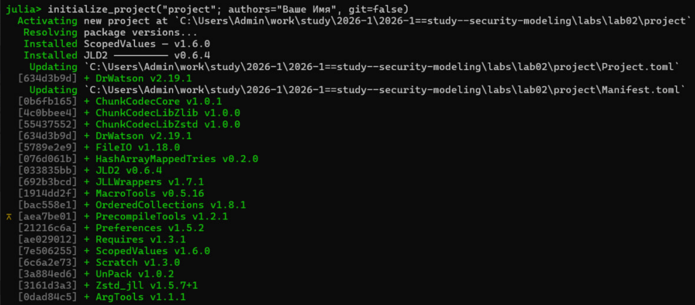
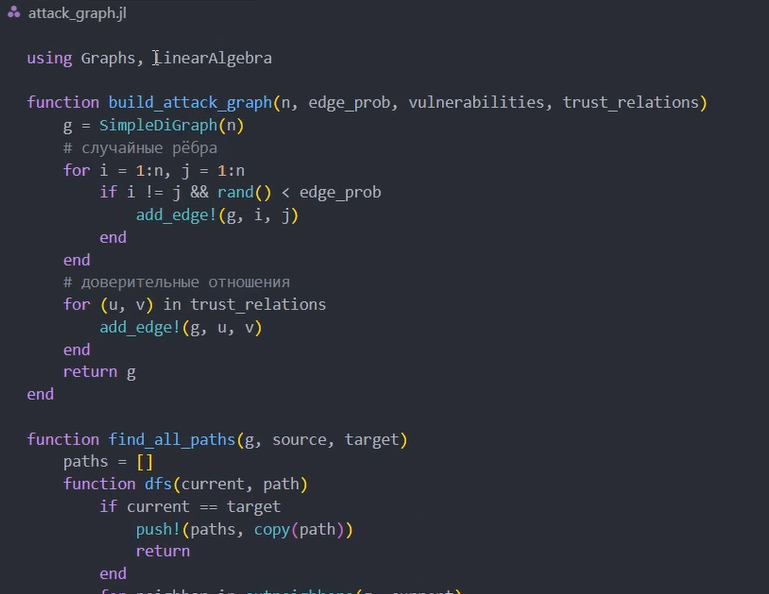
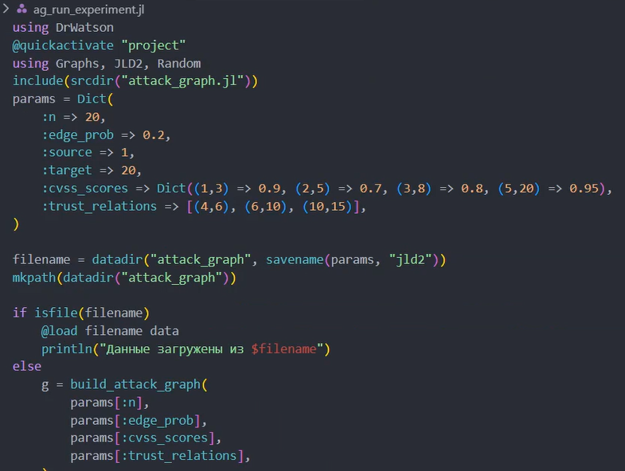
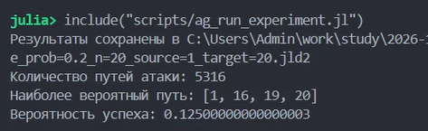
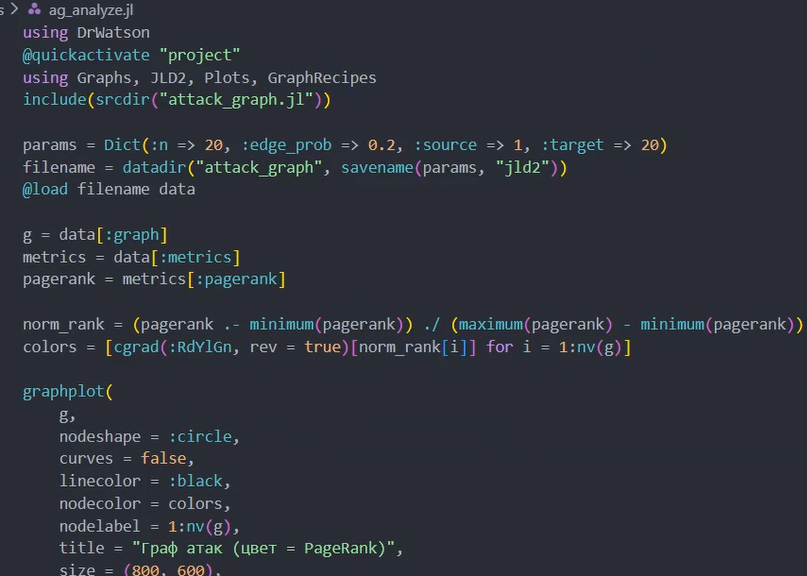
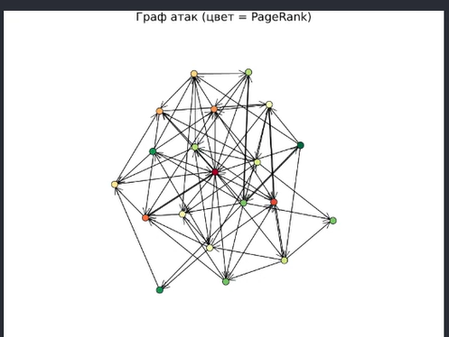
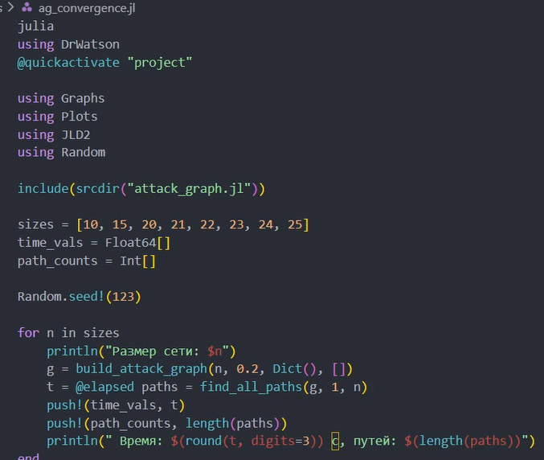
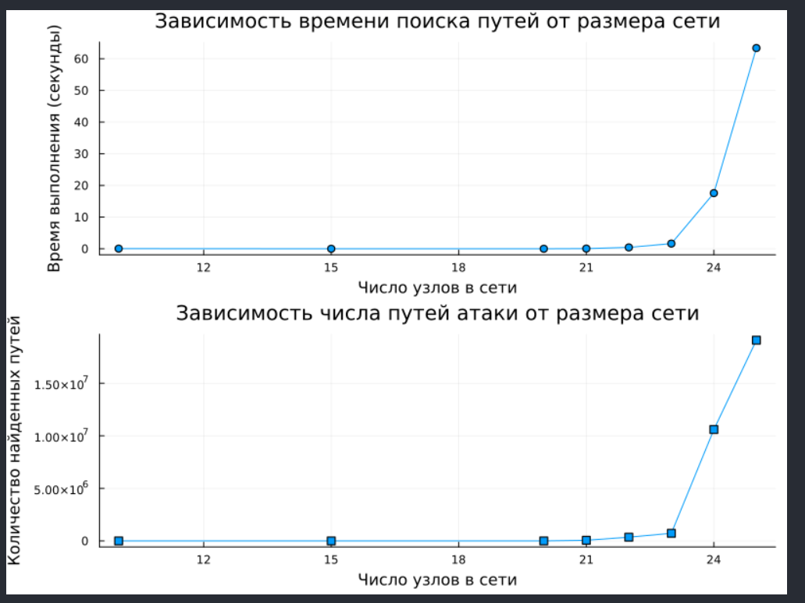
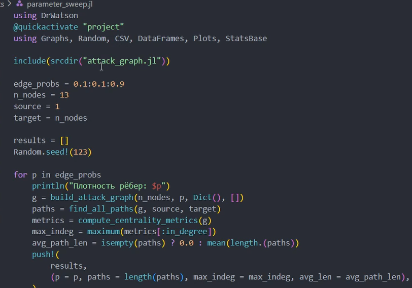
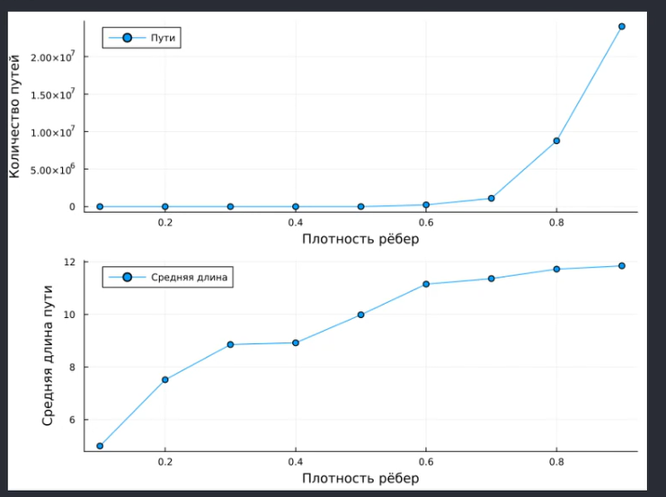
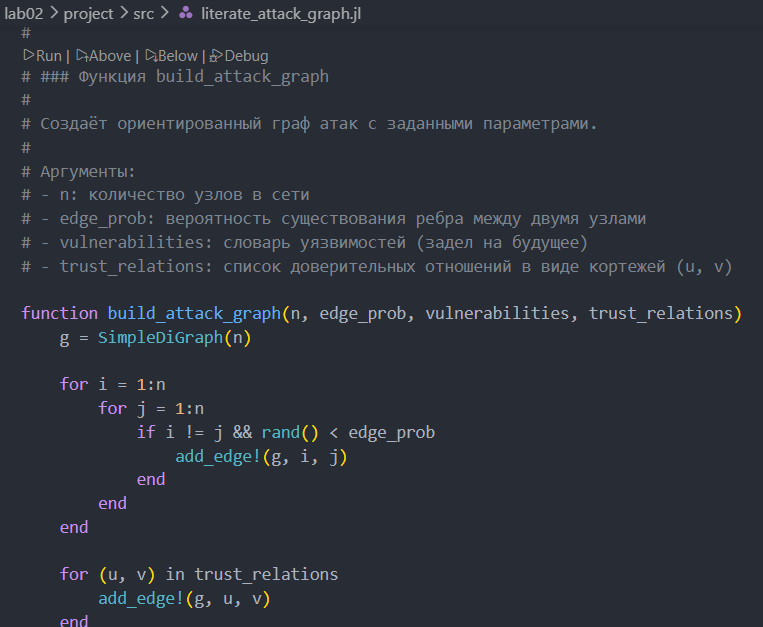
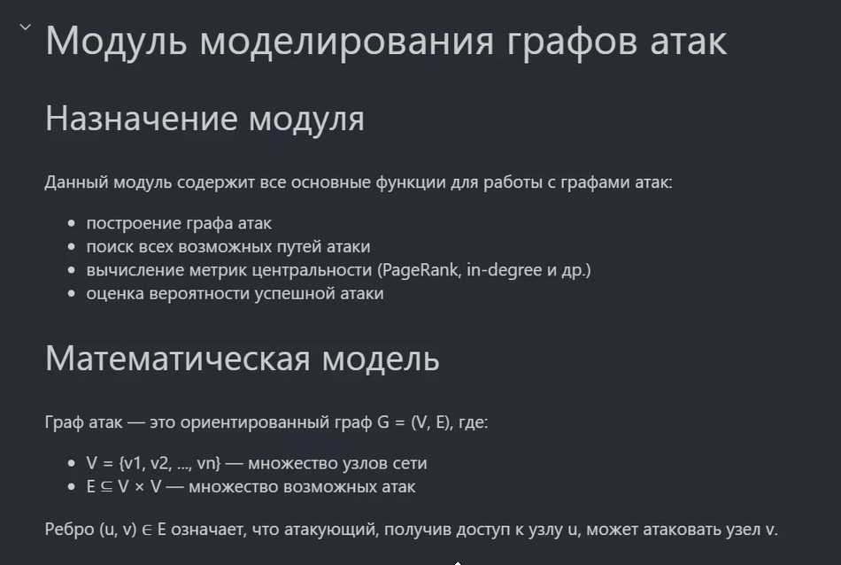
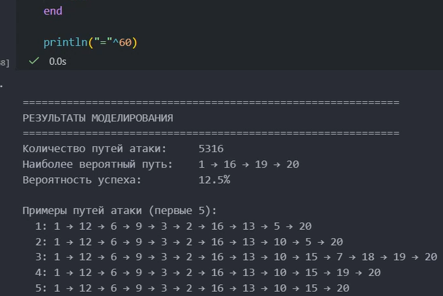
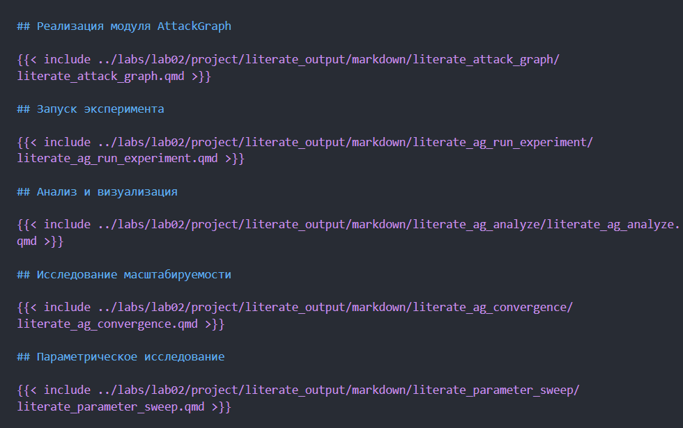
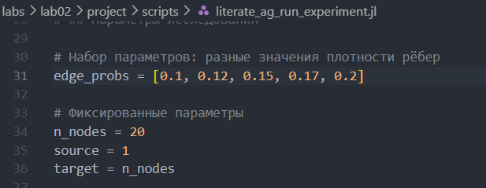
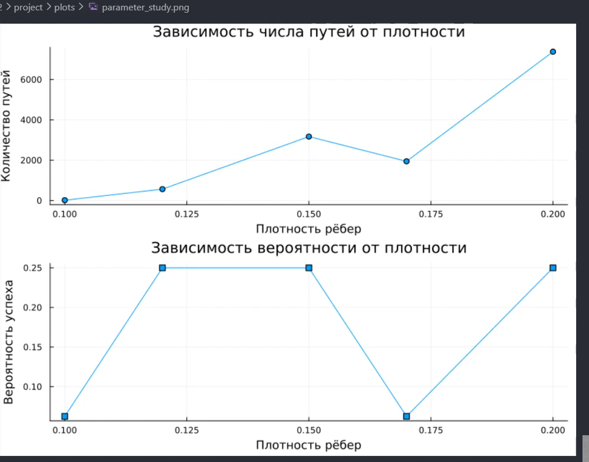
В ходе выполнения лабораторной работы я успешно освоил методы построения и анализа графов атак для оценки уязвимостей сетевой инфраструктуры, смоделировал атаки на корпоративную сеть.